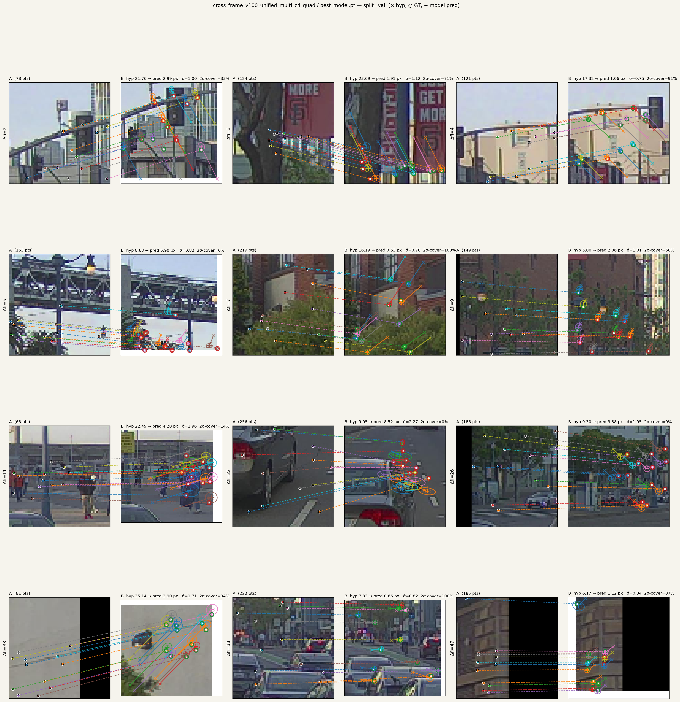

TL;DR — 自動運転 / ロボット用の各種空間タスク (再キャリブレーション、 高精度地図の更新、SLAM、loop closure 検証など) の中身は、すべて 「ある点がカメラ画像のどこに対応するか」を高い信頼度で当てる primitive で 書き直せる。本プロジェクトはこの primitive を per-point の (Δuv, Σ) 出力ネットワーク として直接学習する。 特徴量マッチング、 RANSAC、shadow descriptor、巨大 SLAM solver — どれも要らなくなる。
PandaSet 39-scene front_camera で訓練したモデル v100 (multi c4 quad) の val 出力。 各サンプルは 1 つの A→B 投影ペアを示す:

各点について:
ぱっと見の特徴:
「同じ点がどこに、どのくらいの確信度で対応するか」 が高精度に出るだけで、 自動運転の現場で発生する空間タスクは下流が組める:
| 用途 | 何をするか |
|---|---|
| 再 calibration | 工場出荷時の K, T_extrinsic が経年で drift。各点 (Δuv, Σ) → Σ-weighted least squares で 1 patch 数秒で修正 |
| 高精度地図の更新 | 既存マップに新走行データを align。変更がある patch だけ Σ-weighted BA、毎日の差分更新が安価 |
| visual / LiDAR odometry | per-frame の pose 仮説に対する残差 head として接続。BA layer の中で iterate 可能 |
| SLAM の loop closure 検証 | candidate pose に対し全点 σ を見れば「正しい loop か」即判定 |
| 動的物体 down-weighting | σ inflation が motion / OOD を勝手に分離 (ラベル不要) |
つまり同じネットワークが calibration / マッピング / SLAM / odometry を 横断的に支える primitive になる。タスクごとに重い専用システムを 作り分けない。
特徴量マッチングを学習可能にする / 回避する研究は過去 5 年大量にある:
| 系統 | 代表手法 | 出力 | pose 扱い |
|---|---|---|---|
| 学習型 matcher | LightGlue, RoMa, DKM | 対応点ペア + 信頼度 | 出力 (RANSAC) |
| Detector-free matcher | LoFTR, ASpanFormer | dense correspondences | 出力 |
| Differentiable SfM | DROID-SLAM, ACE | 密 flow + dense BA | 出力 |
| Pair → pointmap | DUSt3R, MASt3R | 3D point map | 出力 |
| Multi-view → all | VGGT, Fast3R, Spann3R | poses + intrinsics + 3D | 出力 |
| 学習型 PnP | PixLoc, DSAC* | pose 直接回帰 | 出力 |
| 本手法 | (this) | per-point (Δuv, Σ) | 入力 (条件) |
軸別に何が違うか:
ここは整理が要る:
つまり「pose 入力で refine」は DROID 系だけ似た構造で、 他は構造的にできない。
DROID との本質的な違いは設計思想:
ここで重要なのは、本手法の場合 dense BA は要らない:
per-point の (Δuv, Σ) が出ていれば、 数百点の sparse な Σ-weighted 最小二乗 を 1 回解くだけで pose が出る。 反復 dense BA を回す必要はなく、 これは calibration や per-frame pose refinement の closed-form 一発 解析解 (Σ-weighted PnP / extrinsic 推定) として機能する。 dense BA は シーン全体の bundle 整合を取りに行く重い問題で、本提案のスコープ外。
両者の違いを並べると:
| DROID | 本手法 | |
|---|---|---|
| 出力 | per-pixel dense flow + scalar 信頼度 | per-point (Δuv, 2x2 Σ) |
| solver | dense BA layer を内蔵 | 用途別 — sparse 一発、 patch BA、 等 |
| 表現力 | isotropic 重み付けに帰着 | 異方性 Σ を保つ |
| 結合度 | flow ネット + BA layer 一体 | primitive 単独、 solver は外部 |
| 用途 | SLAM 専用 | calibration / map / SLAM / loop verify 共用 |
「モジュール境界をどこに引くか」の選択。本提案は primitive を 1 個に 切り出して、 task ごとに solver を組み替える deployment economics 重視の設計。タスク 1 個ずつに専用 SLAM システムを組むより、 1 つの primitive を維持する方が運用コストが低い。
DUSt3R は 3D 点群、VGGT は scene 全体を出す。本手法は pose 仮説に対する 局所残差だけを出す。シーン構造の再構築は別タスクとして上に乗せる構造。 代わりに「同じシーンの別 pose 仮説」「同じ点の別フレーム評価」を高速で 回せる、軽量 layer として機能する。
matcher は構造上「両画像で同じ点が見えている」前提で対応を取る。 視点外 移動、遮蔽、視点差大はすべて「対応なし」として削除される。
本手法は片側 (A) の query 点だけを起点に、pose 仮説下の射影位置 + 不確実性を出す。 静的シーンであれば遮蔽でも geometry で uv が出る (ただし image-side の証拠は欠ける、片肺になる)。 動的物体だけが本質的に 「静的仮定が破れる」 ので σ が増える。 ハードな inlier/outlier 判定では なく σ という連続値で表現される。
descriptor 系は「同じ 3D 点は視点が変わっても似た descriptor を出す」 という invariance を学習で内製してきた。これは大角度で破綻しやすい。 本手法は pose を入力にもらうので「視点が変わる」を invariance で 解決する必要がない。
入力:
query フレーム A (画像 + LiDAR)
target フレーム B (画像 + LiDAR)
相対 pose 仮説 T_AB_hat (ノイジーで OK)
出力: 各 query 点について
Δuv ∈ ℝ² : B 画像内での投影位置補正
Σ ∈ ℝ²ˣ² : 補正の 2D 共分散 (確信度)
(Δuv, Σ) は 2D Gaussian の自然なパラメータ化。 そのまま
Σ-weighted least squares / Gauss-Newton / Levenberg-Marquardt の
最適化道具に接続できる。 RANSAC や inlier threshold を介在させる
必要はない。
Gaussian Splatting も「点ではなく分布で世界を表現する」設計の代表例: GS はシーン側 (3D 描画用 Gaussian)、本手法はマッチング側 (2D 残差用 Gaussian)。 適用領域は違うが、共通する設計原理:
「点を分布に格上げした方が世界をうまく扱える」という同じ直感に立っている。
各フレームを 画像 + LiDAR が同じ 8x8 grid 上に統合された frame_token
にエンコード。 Empty cell = 0 + has-pt mask。 cross-attention で複数 KV
フレームを deformable に sample 統合。詳細: models/cross_frame_unified.py、
docs/unified_progression.md、docs/multi_frame_attention.md。
「pose 仮説を入力にもらって per-point の Δuv + σ を一発で出す」は 非自明なタスクで、 cross-attention の depth = thinking steps の構造で 解けてる:
これは LLM の reasoning depth と同じ構造。一発出しでは無理なタスクを 段階的合成で解いている。
実験裏付け (詳細: docs/unified_progression.md):
pair (KV=B のみ) multi (KV=M+B)
C=2 val_err : 2.35 2.38 ← 同じ
C=3 val_err : 2.36 2.09 ← multi が効き始め
C=4 val_err : 2.29 1.93 ← さらに伸びる
N=4 (M1+M2+B), C=4 : 1.85, val_nll 1.59 (歴代最高)
supervised learning には pose の正解と各点の uv 正解が要る。 これらは 専用アノテーションなしに作れる:
連続フレーム (A, M1) (0.1-0.5 秒、距離 1-5m):
A → M1 → M2 → ... → M_k → B の chain:
T_{A→B} = T_{A→M1} ∘ T_{M1→M2} ∘ ... ∘ T_{Mk→B}
100m baseline = 30 hop × 3m → 30 因子の合成。 GICP は各 hop で点群を anchor として align するので drift が systematic に蓄積しない。実測で 30 hop 合成で final 誤差 < 10cm @ 100m baseline (= 角度 0.06°、画素 1-2 px) に収まる。
合成誤差を完全に 0 にはできないが、 supervised learning では深刻ではない:
つまり「データ量で GT noise が消える」。 公開データ 5 種 (PandaSet, Waymo, nuScenes, AV2, DDAD) を統合すると 1500+ scenes、ZOD を加えれば さらに増える。 自然な data diversity (天候、地理、 sensor 仕様) で photometric augmentation や hard negative mining を回避できる。
公開データセットには 3D bounding box annotation + uuid tracking が
ある。動的物体 (attributes.object_motion = Moving) の box 内点は box の
rigid 変換で warp して GT を更新できる (詳細: docs/dynamic_object_sigma.md)。
matcher が必要だった「動的物体 → 排除」は要らない。
長基線 (>100m + 大角差) では matcher が要るのでは、と言われがちだが:
この組合せ (pose 入力 + 2D Gaussian 出力 + cross-modal supervised + chain composable) を直接やってる先行論文は知る限り見当たらない。理由は推測:
つまり理論的なブレイクスルーではなく、 現代の sensor stack + 公開データ 状況に合わせた具体的な engineering choice の組合せ に新規性がある。
models/cross_frame_unified.py — 本手法の実装本体docs/unified_progression.md — アーキ進化と val_err / nll の改善履歴docs/dynamic_object_sigma.md — σ が動的物体を勝手に分離する解析docs/multi_frame_attention.md — 複数フレーム統合の設計議論